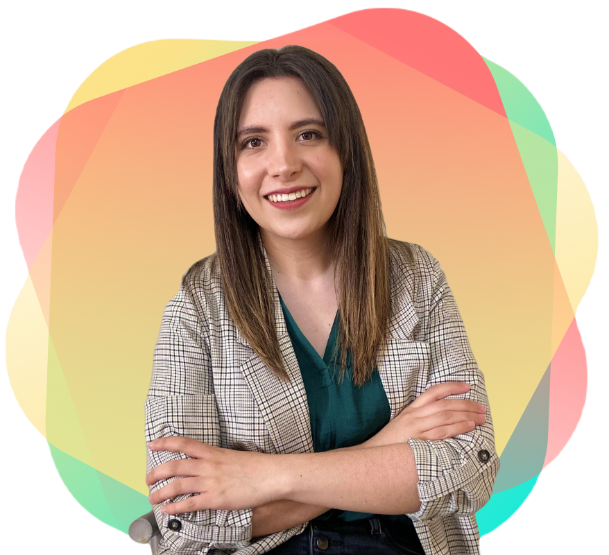

Hello I'm Ithza
Frontend Developer
💚 Platzi Master Student
👩🔬 Forever learner


Frontend Developer
💚 Platzi Master Student
👩🔬 Forever learner
Welcome to my blog.
Let's talk about a little about me. As you see, I'm frontend developer, I really love to design and create digital products. I'm always learning something new because that's what life is, a bunch of stuff that needs to be learnt.
If you need some inspiration to begin, I would like to share some of my story.
I graduated from school 5 years ago as Computer Systems Engineer, I thought that I knew enough to go and eat the world, but unfortunately I was completly wrong.
I started to work in a big company as mid senior developer, (I was the only developer in the department) so that's why I was mid 😂, I started two cool projects, one of them was for home automation and I learnt how to work with Electrical Engineers, Raspberry PI and Python, and wow! that was tough.
Even when the projects were very interesting I didn't feel complete, I wanted to do more, so I accepted an opportunity in other project, lots of nights working in the office, of course that was not for me, so I quit!
Then I thought that I was found my dream job, my folks were super cool, always helping and working, this job was near of my home, I had free transportation and other good perks. And then ... something happened and everything became a toxic environment.
Brace yourself because this is where the story begins 👀
I was very uncomfortable with everything, I didn't talk with nobody, I ate alone. 😬
I started to search a new job, I was feeling very secure about my knowledge, so I applied to a great companies, but guess what?!, I was truly kicked in all of the interviews!.
Wow that was the most painful feeling in my life.
Sometimes you can feel that way too, but you have two options:
1. Give up
2. Start learning
At this point I met Platzi and I didn't hesitate about purchase my suscription because my biggest desire is to become into a great frontend developer.
While I was studying in platzi I couldn't quit to my job because I needed the money so I asked my boss if there was the possibility of being part of another team, and she accepted. The scrum master quit when I just joined the project, was very very tough at the beginning, and then they asked me if I wanted to be the scrum master, and I accepted. My team didn't want me in that position and was really tough to have their acceptance.
I started to learn about emotional intelligence, time management, scrum, productivity, how to work with teams and so much more, that opened my mind in a very wonderful ways, I wanted to apply all that knowledge with my team but it wasn't possible because I was not accepted as her leader.
I never gave up though.
On April 2021 I was accepted as Platzi Master Student 💚 and a new job opportunity came and I could quit to that job.
Right now I'm still learning in Platzi all about Javascript and Product design.
Finally I want you to remember this 3 things
🤗 1. Never give up on your dreams
🤗 2. Learn as much as you can
🤗 3. Share your knowledge
This is a plus one: learn English.
But those who wait on the Lord Shall renew their strength; They shall mount up with wings like eagles, They shall run and not be weary, They shall walk and not faint. Isaiah 40:31